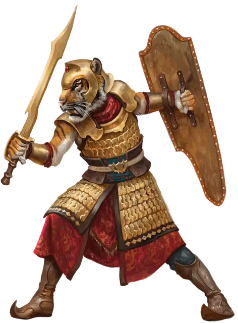

Закия Ракшас
Zakya Rakshasa
Среднее Исчадие, законно-злое

Класс Доспеха 18 (кольчуга, щит)
Хиты 59 (7к8 + 28)
Скорость 30 футов
| мод | спас | ||
|---|---|---|---|
| СИЛ | 18 | +4 | +4 |
| ЛОВ | 14 | +2 | +2 |
| ТЕЛ | 18 | +4 | +4 |
| мод | спас | ||
|---|---|---|---|
| ИНТ | 12 | +1 | +1 |
| МДР | 13 | +1 | +1 |
| ХАР | 11 | +0 | +0 |
Навыки Атлетика +7, Восприятие +4
Уязвимость к урону колющий от магического оружия, которым вооружены добрые существа
Сопротивление урону дробящий, колющий, рубящий от немагических атак
Чувства тёмное зрение 60 футов, пассивное Восприятие 14
Языки Общий, Инфернальный
Опасность 5 (1800 опыта)
Бонус мастерства +3
Особенности
Врожденное колдовство. Базовой характеристикой ракшаса является Харизма (Сл спасброска от заклинания 11). Он может накладывать следующие заклинания, не нуждаясь в материальных компонентах:
• Неограниченно: обнаружение мыслей [detect thoughts], маскировка [disguise self]
• 1/день каждое: щит [shield]
Ограниченный иммунитет к магии. Ракшас не может быть поражен или обнаружен заклинаниями 1-го уровня или ниже, если он этого не хочет. Ракшаас совершает с преимуществом спасброски против всех остальных заклинаний и магических эффектов.
Магическое оружие. Атаки оружием ракшасы считаются магическими.
Боевая доблесть (1/ход). Когда ракшас попадает по существу рукопашной атакой оружием, атака дополнительно наносит 11 (2к10) урона того же вида и существо должно совершить спасбросок Силы Сл 15. При провале ракшас может оттолкнуть существо на расстояние до 10 футов от себя, сбить существо с ног или заставить его выронить один предмет, который он держит по выбору ракшаса.
Действия
Мультиатака. Ракшас совершает три рукопашные атаки оружием. Вместо этого, он может совершить две дальнобойные атаки своими дротиками.
Длинный меч. Рукопашная атака оружием: +7 к попаданию, досягаемость 5 футов, одна цель. Попадание: 8 (1к8 + 4) рубящего урона или 9 (1к10 + 4) рубящего урон, при использовании оружия двумя руками в рукопашной атаке.
Дротик. Рукопашная или дальнобойная атака оружием: +7 к попаданию, досягаемость 5 футов или дистанция 30/120 футов, одна цель. Попадание: 7 (1к6 + 4) колющего урона.
Описание
За миллионы лет до возникновения гуманоидных рас ракшасы Эберрона правили цивилизацией, которая охватывала весь Кхорвайр. Мастера боя, ракшасы Эберрона с демонической яростью размахивают своим оружием, бросаясь в бой, чтобы отомстить тем, кто связал их дьявольских хозяев.
Ракшасы описаны в Бестиарии. Здесь представлен боевой вариант-закия ракшаса.
Закия ракшасы - это кровожадные пехотинцы из орды ракшасов. Ими движет желание освободить своих демонических правителей, а попутно они мстят драконам и тем, кто почитает коатлей. В отличие от других ракшасов с их роскошными одеждами и нарядами, закия ракшасы почти всегда одеты в боевое снаряжение: поношенная чешуйчатая кольчуга, острый как бритва длинный меч и тяжелый щит с эмблемой их демонического хозяина.